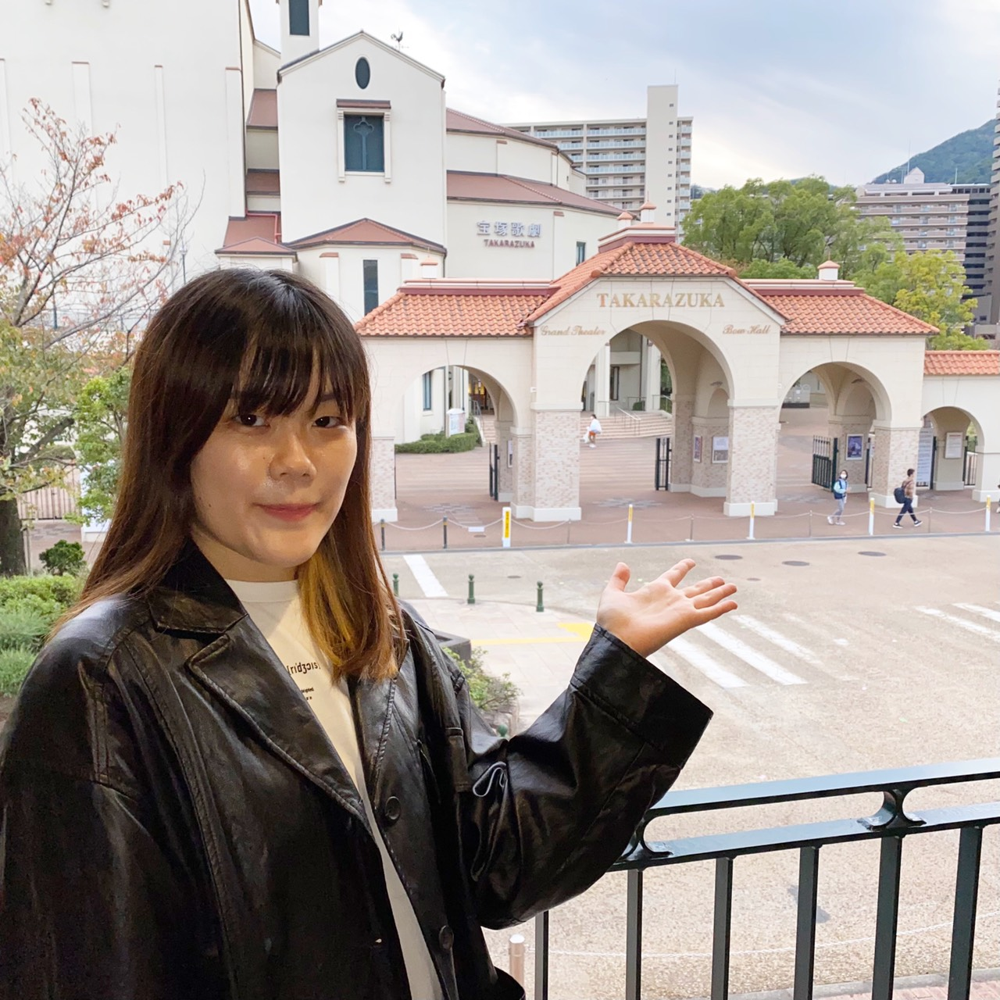

About
About

畠 菜摘
Hata Natsumi
武庫川女子大学 生活環境学部 情報メディア学科3年
とにかくクリエイティブなことが好きです。イラストを描く、そのイラストを動かす、動画を作るなど今まで様々なことに手を出してきましたが、その全てに共通している事は「見た人に喜んで貰いたい」という気持ちです。この気持ちを大切に、沢山の人に喜んでもらえるような作品を作り続けていきたいです。